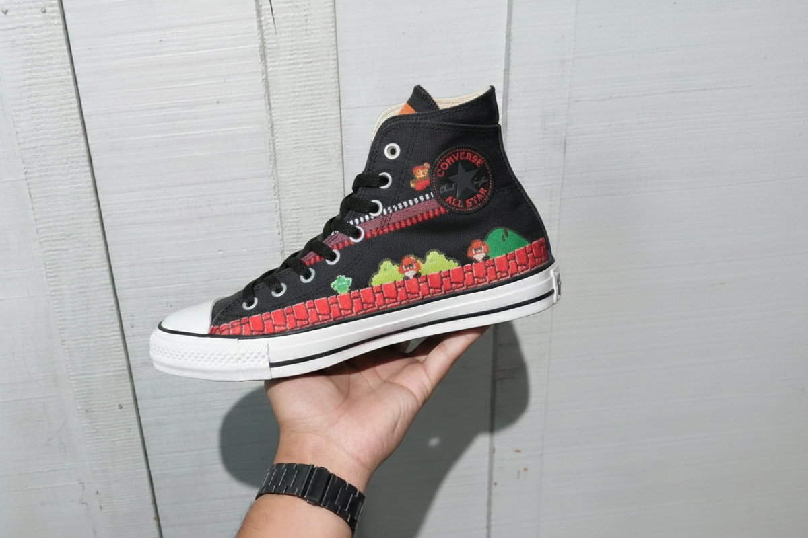
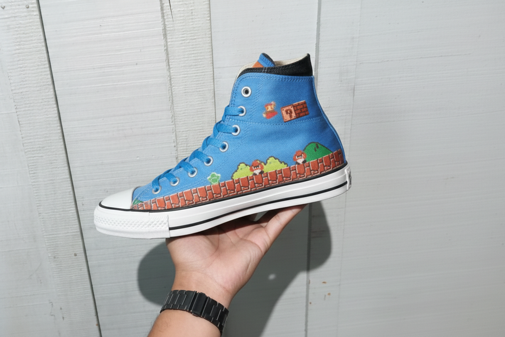
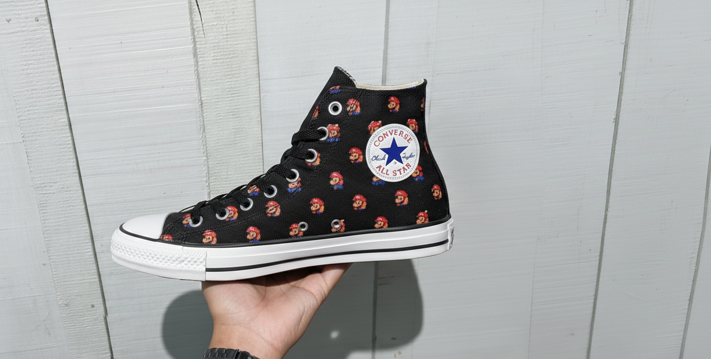
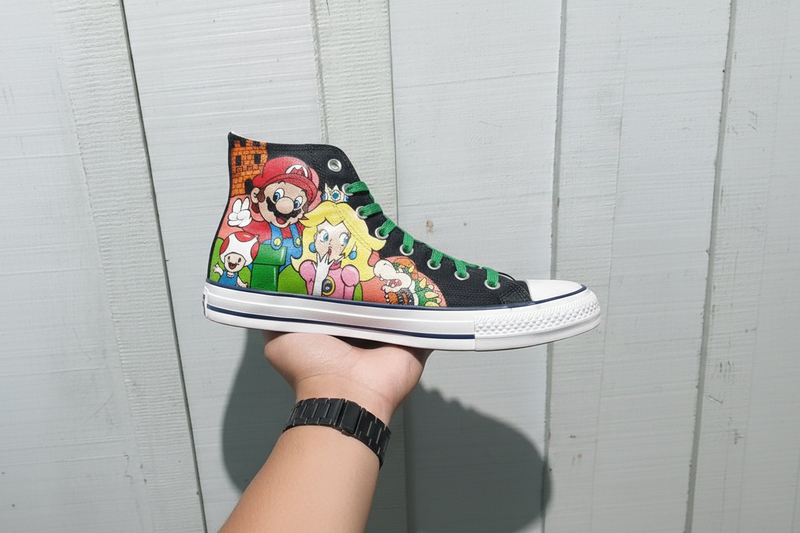

Diferente dos modelos anteriores que traziam apenas imagens do personagem, este novo modelo trouxe imagens de duas fases do game Super Mario Bros., a 1ª fase do jogo e uma das fases que se passa dentro de um dos Castelos do game (que eu amo). Pode até parecer meio infantil, mas eu conheço um monte de marmanjo que adorariam ter um destes também. Este par de tênis, como a maioria, foi importado do Japão e somente vendido por lá

A filial japonesa da Converse lançou este também para a mesma coleção do tênis do bowser da foto ao lado, mas foi lançado em meses diferentes ja que a primeira coleção fez sucesso.

Este em particular foi lançado junto com a coleção Chuck Taylor All Star, este tênis levou o nome de One Star Super Mario Bros, confeccionado em couro preto polido com um solado branco. O destaque central com essa estrela do Super Mario que é inconfundível e claro o nosso personagem favorito(ou da maioria) da maneira mais clássica possível ali na lateral do calcanhar. O forro interno em couro vermelho e a palmilha também exibem a estampa original do Mario Bros.

Este eu tenho um apreço diferente porque a Converse lançou este especialmente para o aniversario do jogo, foi lançado uma linha com diversas imagens do nosso personagem. Ele é de cano alto e veio na versão em branco e preto, mas só consegui adiquirir o preto por conta do branco ja ter esgotado.A língua do calçado tem detalhes adicionais do jogo e o símbolo All Star da lateral foi transformado em uma imagem da famosa estrela do game (achei super criativo)

Este nãoi tem uma história tão emocionante por trás porque não foi um lançamento oficial da Converse para a linha Mario Bros, somente foi feita por um fã em tinta acrílico e eu consegui adiquirir um par para mim porque mesmo não sendo oficial, não da para negar de que a pessoa que criou foi extremamente criativa e eu amei.